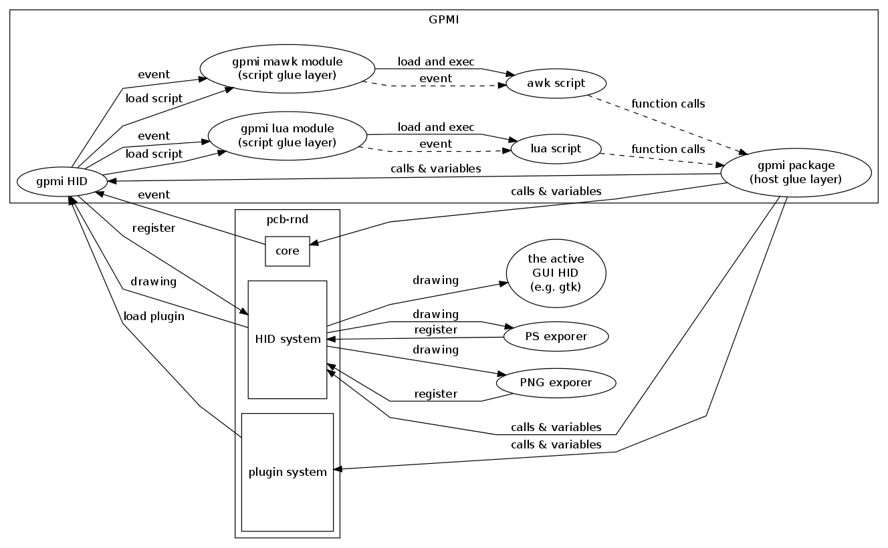
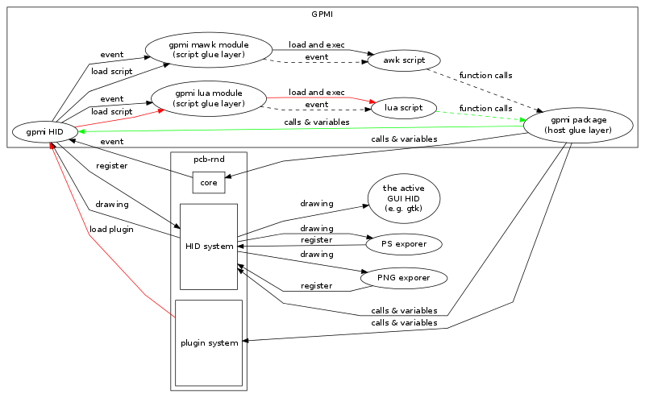
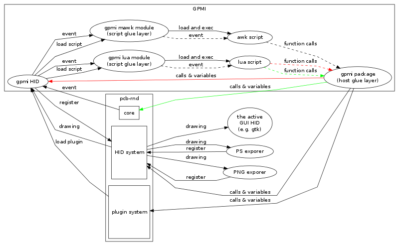
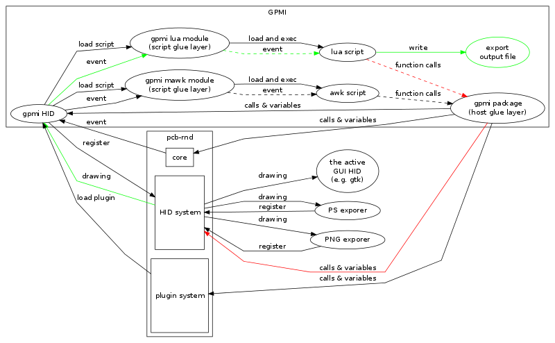

The scope of the document is to describe the relations between pcb-rnd, hids, GPMI, glue packages and scripts. Details on how specific glue packages access pcb-rnd internals (or how those internals work) are described in other documents.
Note 1: at the moment GUI hids can not be plugins or buildins.
Note 2: plugins/buildins are always exporter HIDs technically, but in practice
they do not have to offer exporting. This means such a HID plugin is loaded
and registered as an exporter on paper, but it doesn't really create a
new export facility, just sits there, interacting with pcb-rnd (creating
menus, actions, etc). Most script plugins do this.
When pcb-rnd executable is compiled, the core, the default GUI and exporter HIDs and buildins are compiled into the executable. Later on
The GPMI hid is an optional plugin that, by compile-time choice of the user, can be:
GUI menus are configured to execute actions too. This also means it is impossible to realize an user-accessible functionality that can be triggered from the GUI command line, menu or batch input without making it an action.
The only exception, where new functionality is not behind a new action is exporters. An exporter is a structured dialog box of options and a set of callback functions implementing a drawing API. Exporting works by the following steps:
GPMI is a plugin/buildin HID. Instead of doing actual work, it loads scripts
and provides a glue layer between pcb-rnd and the scripts. The actual work
is performed by the scripts.
The glue layer comes in two kinds:
|  |
|
Each time a script needs to be loaded, first a module is loaded and the name
of the script is passed to the module. During module initialization, the module
sets up a script interpreter and script context and loads the script into the
context.
If there are 3 separate lua scripts running in pcb-rnd, there are 3 separate lua modules loaded, each dealing with one of the scripts. The process of loading a script is illustrated by highlighting the relevant paths with red for step 1 and green for step 2. Step 0: the GPMI HID finds a script has to be loaded. The idea comes from the config file (pcb-rnd-gpmi.conf) or from the GUI (manage scripts) or as a request from a script already loaded. Step 1: the GPMI HID loads the corresponding module which in turns loads the script. The script has a "main" part that is run on load. For most languages this is the global code sections; in some languages it is a specific function, usually called main. A few basic glue packages are already loaded before the script. Step 2: the script can load glue packages. This usually happens from the on-load main part from the script. The actual mechanism is to call PkgLoad() from a glue package that was automatically loaded in Step 1. The green arrows represent this path: the script executes PkgLoad() which in turns loads other package(s) into the GPMI hid. Packages are loaded only once and are globally accessible for multiple modules. |  |
|
Binding an event in a script is done by calling the Bind() function
(this is implemented in a package automatically loaded). The first
argument is the name of the event, the second argument is the name of
the script function that should be called when the event is triggered. Both
arguments are strings. The event binding mechanism is shown in red in the
map to the right.
The script can create new actions using the action_register() function (the actions package needs to be loaded first). A script may register multiple actions. This call is marked with green in the above map. If any of the actions registered by the script is called, the event "ACTE_action" is generated. This has two implications:
|  |
|
Menus are created using the create_menu() call. Menus can be
created only when the GUI is already set up - this may happen only
after some of the scripts are already loaded. Thus scripts shall
create menus from an event handler bound to the ACTE_gui_init event.
This event is triggered right after the GUI has been set up.
On the map to the right the red arrows represent the path of ACTE_gui_init;
the green arrows represent the reaction of the script, creating the new
menu.
| |
|
Exporter scripts first have to set up an exporter hid. This typically
happens from their on-load main part. Related calls are in the hid
package. The following map shows this process with red arrows:
When the user chooses to use the exporter, among the green arrows, a series of events are triggered and the script can generate output directly to a file from event handlers bound to these exporting events. |  |
If gpmi is a plugin, gpmi_plugin.so (or gpmi_plugin.dll) needs to be copied in one of the plugin directories pcb-rnd is looking into on startup:
| path | purpose |
|---|---|
| $prefix/lib/pcb-rnd/plugins/$arch/ | system plugins, multihost |
| $prefix/lib/pcb-rnd/plugins/ | system plugins |
| ~/.pcb/plugins/$arch/ | user plugins, multihost |
| ~/.pcb/plugins/ | user plugins |
| ./plugins/$arch/ | project plugins, multihost |
| ./plugins/ | project plugins |
Script load lines contain two words separated by a space: a module name and a script name. Relative paths in the the script name are relative to the directory the config file is found in.
Example config:
# load the carc script (written in lua) from next to the config file: lua carc.lua # load foo.awk, whcih is a mawk script, from its installation path mawk /usr/lib/foo/foo.awk